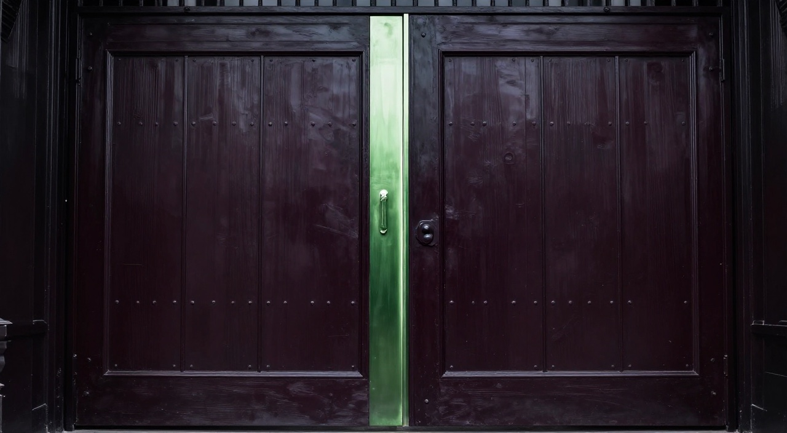
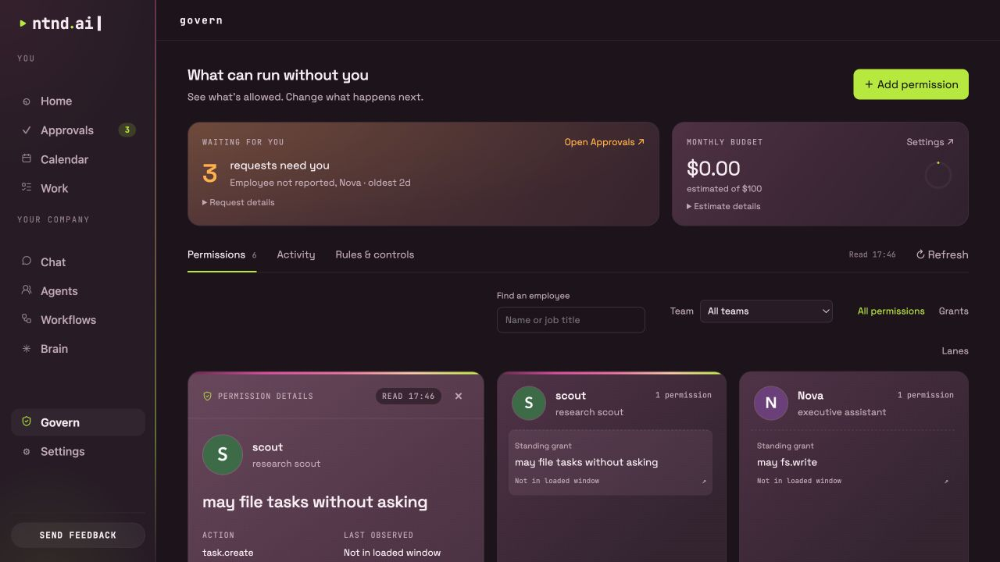

Approve once.
An ordinary approval answers this request. It does not quietly become a rule for future work.
Inspect a request before you decide. Approve it once, deny it, or deliberately give a supported action a standing permission.

Try an ordinary approval, then repeat the request. Reset and grant a standing permission to see what changes.
Scope: this named workflow. Its individual actions still meet their own permission checks.
A simplified demonstration of supported workflow permissions. Nothing runs. No permission is stored after you leave.
An ordinary approval answers this request. It does not quietly become a rule for future work.
Choose a standing permission explicitly. Future matching requests may use it while valid. Permissions can expire, exhaust their uses or be revoked.
Inspect the action, decision and execution events in a local hash-chained log. Tamper-evident does not mean impossible to alter.

Cloud usage is estimated from the calls and prices the engine knows about.
Budget checks run before another call. A call can take spending past the limit, and unpriced models are not covered by the same estimate. Treat the figure as an operating signal, not an exact billing invoice.
A local fallback requires a suitable model available through Ollama.
Read the model and storage details ↗︎Rules differ by action and connector. Some read actions and replies within an allowed context can proceed under existing authority. Review the actual request and permission scope; the website does not promise a prompt before every action.
Instructions describe the job. They do not themselves create runtime authority. A skill is a method, and a permission is a separate control.
No. Permission answers whether an action may proceed. Review the delivered file for accuracy and usefulness. The richer result-review cycle is on the roadmap.
It is hash-chained and designed to make alteration detectable. It is a local record under the operator’s control, not a claim that modification is impossible. Removing the newest entries can escape detection without an independent checkpoint.
Tell us about the work you would explore and its boundaries.
Request alpha access